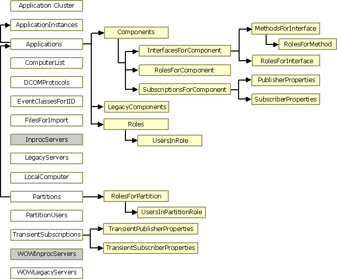

The COM+ administration collections serve to hold and organize configuration data stored in the COM+ catalog. The collections correspond to folders in the console tree of the Component Services administration tool. You can access these collections by using the COM+ administration objects and interfaces.
You initiate programmatic administration by using objects created from the COMAdminCatalog class, you represent any collections in the catalog by using objects created from the COMAdminCatalogCollection class, and you represent items in collections by using objects created from the COMAdminCatalogObject class.
The items in a given collection expose a consistent set of properties. For example, every item in the Components collection represents a component, and the items in the Components collection expose the same properties used to configure a component. These properties can be accessed by using the COMAdminCatalogObject class.
[!Note]
Properties with WriteOnce access are ReadWrite while using the Add method prior to using SaveChanges and are ReadOnly afterward.
Â
For an introduction to programmatic administration of COM+, see Automating COM+ Administration.
The following figure illustrates the relationships among the collections. The collections at the far left (in white and gray boxes) are top-level collections, which are accessed by calling the GetCollection method of an object created from the COMAdminCatalog class. The remaining collections (in yellow boxes) can only be accessed through their parent collection, by calling the GetCollection method of the COMAdminCatalogCollection object that represents their parent. The arrows point from a parent collection to its child collections.

The following four collections are not illustrated in the figure: ErrorInfo, PropertyInfo, RelatedCollectionInfo, and Root. The ErrorInfo collection is a child of every collection in the figure except InprocServers and WOWInprocServers (in gray boxes). The PropertyInfo and RelatedCollectionInfo collections are children of every collection. The Root collection is a top-level collection that is the parent of all other top-level collections. However, it is not necessary to access the Root collection before accessing other top-level collections.
The following collections are supported by the COMAdmin library.
| Collection | Description |
|---|---|
| ApplicationCluster | Contains a list of the servers in the application cluster. |
| ApplicationInstances | Contains an object for each instance of a running COM+ application. |
| Applications | Contains an object for each COM+ application installed on the local computer. |
| Components | Contains an object for each component in the application to which it is related. |
| ComputerList | Contains a list of the computers found in the Computers folder of the Component Services administration tool. |
| DCOMProtocols | Contains a list of the protocols to be used by DCOM. It contains an object for each protocol. |
| ErrorInfo | Retrieves extended error information regarding methods that deal with multiple objects. |
| EventClassesForIID | Retrieves information regarding event classes. |
| FilesForImport | Retrieves information from its MSI file about an application that can be imported. |
| InprocServers | Contains a list of the in-process servers registered with the system. It contains an object for each component. |
| InterfacesForComponent | Contains an object for each interface exposed by the component to which the collection is related. |
| LegacyComponents | Contains an object for each unconfigured component in the application to which it is related. |
| LegacyServers | Identical to the InprocServers collection except that this collection also includes local servers. |
| LocalComputer | Contains a single object that holds computer level settings information for the computer whose catalog you are accessing. |
| MethodsForInterface | Contains an object for each method on the interface to which the collection is related. |
| Partitions | Used to specify the applications contained in each partition. |
| PartitionUsers | Used to specify the users contained in each partition. |
| PropertyInfo | Retrieves information about the properties that a specified collection supports. |
| PublisherProperties | Contains an object for each publisher property for the parent SubscriptionsForComponent collection. |
| RelatedCollectionInfo | Retrieves information about other collections related to the collection from which it is called. |
| Roles | Contains an object for each role assigned to the application to which it is related. |
| RolesForComponent | Contains an object for each role assigned to the component to which the collection is related. |
| RolesForInterface | Contains an object for each role assigned to the interface to which the collection is related. |
| RolesForMethod | Contains an object for each role assigned to the method to which the collection is related. |
| RolesForPartition | Contains an object for each role assigned to the partition to which the collection is related. |
| Root | Contains the top-level collections on the catalog. |
| SubscriberProperties | Contains an object for each subscriber property for the parent SubscriptionsForComponent collection. |
| SubscriptionsForComponent | Contains an object for each subscription for the parent Components collection. |
| TransientPublisherProperties | Contains an object for each publisher property for the parent TransientSubscriptions collection. |
| TransientSubscriberProperties | Contains an object for each subscriber property for the parent TransientSubscriptions collection. |
| TransientSubscriptions | Contains an object for each transient subscription. |
| UsersInPartitionRole | Contains an object for each user in the partition role to which the collection is related. |
| UsersInRole | Contains an object for each user in the role to which the collection is related. |
| WOWInprocServers | Contains a list of the in-process servers registered with the system for 32-bit components on 64-bit computers. |
| WOWLegacyServers | Identical to the LegacyServers collection except that this collection is drawn from the 32-bit registry on 64-bit computers. |
Â
Â
Â